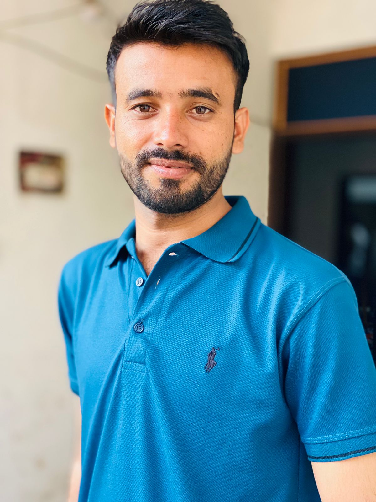

Waqar Ali Soomro
Probability · stochastic processes · random walks with memory
MSc Applied Mathematics (Stochastics), 2026
Teaching assistant, Institute of Mathematics
Budapest University of Technology and Economics

Research
I work in probability theory, with a focus on random walks with memory and the martingale methods used to identify their scaling limits. My MSc thesis, supervised by Dr Bálint Vető, studied the Elephant Random Walk in its superdiffusive regime. I am also interested in limit theorems and large deviations, and in Monte Carlo methods for stochastic simulation.
Earlier, in a Project Laboratory supervised by Dr Roland Molontay (2024–25), I carried out a panel-data econometric analysis of ten-year sovereign bond yields against debt-to-GDP ratios for the Visegrád Four, followed by machine-learning methods on structured graph data.
Thesis
Limiting Distribution of the Elephant Random Walk in the Superdiffusive Regime
The Elephant Random Walk is a non-Markovian walk whose next step repeats, with probability p, a uniformly chosen earlier step, and reverses it otherwise. For p > 3/4 the walk is superdiffusive and, after rescaling, converges to a non-Gaussian limit.
Sn / n2p − 1 → Lalmost surely, for p > 3/4
The thesis gives a largely self-contained treatment of the two established routes to this limit: Bercu’s martingale method and the Guérin–Laulin–Raschel fixed-point equation, with proofs expanded and filled in. The third- and fourth-moment computations, only sketched in Bercu’s paper, are carried out in full by a Gamma-telescoping argument, and the two approaches are shown to give identical moments up to fourth order.
Defended publicly on 7 July 2026 before a committee of Prof. Marianna Bolla, Dr Balázs Ráth and Dr Attila Nagy.
Publications
Conference papers
- [1]M. Meghwar, W. A. Soomro, T. Kovács, and B. Lal. ACF-guided LSTM framework for multi-step indoor temperature forecasting in IoT smart buildings. IEEE Smart World Congress 2026, Italy. Accepted.
Theses
- [2]W. A. Soomro. Limiting distribution of the Elephant Random Walk in the superdiffusive regime. MSc thesis, Budapest University of Technology and Economics, 2026.
Education
MSc Applied Mathematics, specialisation in Stochastics, Budapest University of Technology and Economics. Final classification excellent with highest honours (4.73 / 5.00); Stipendium Hungaricum scholar.
Partial studies in probability and stochastic processes (részismereti képzés), Budapest University of Technology and Economics.
M.S. Applied Mathematics, coursework completed, NED University of Engineering and Technology, Karachi. GPA 3.96 / 4.00.
BE Civil Engineering, Mehran University of Engineering and Technology, Khairpur Mir’s.
Teaching
Probability Theory 1 (demonstrator); Calculus 1 (teaching assistant); Mathematics G3k for professional pilots (examination grading).
Calculus 2, groups G2f and A2a (teaching assistant). Wrote the midterm, retake and combined examination papers and the weekly exercise sheets with full solutions, typeset in LaTeX.
All at the Institute of Mathematics, Budapest University of Technology and Economics.
Service
Examination supervisor, 68th International Mathematical Olympiad, Budapest, July 2027. Selected by the national organising committee.
Founder, BME International Mathematics Support Society, a student initiative helping international students at BME with mathematics; to be inaugurated in 2026–27 under the BME International Affairs Committee.
Flood-relief volunteer, northern Sindh: fundraising and distribution of rations and clothing to displaced families.
Volunteer teacher, Lakhi, Sindh: reading and elementary mathematics for primary-age children.
Scholarships
Stipendium Hungaricum Scholarship, full Hungarian government scholarship for MSc study at BME, administered by Tempus Public Foundation.
Prime Minister’s National Laptop Scheme, awarded on academic merit by the Higher Education Commission of Pakistan.
Government of Pakistan need-based scholarship for undergraduate study at Mehran University of Engineering and Technology.
Contact
Postal address
Institute of MathematicsBudapest University of Technology and Economics
Egry József u. 1, Building H
H-1111 Budapest, Hungary
Languages: Sindhi and Urdu (native), English (B2, onSET).